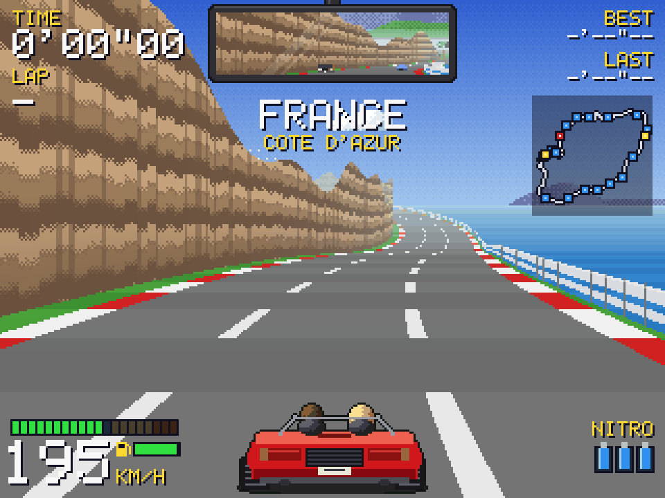
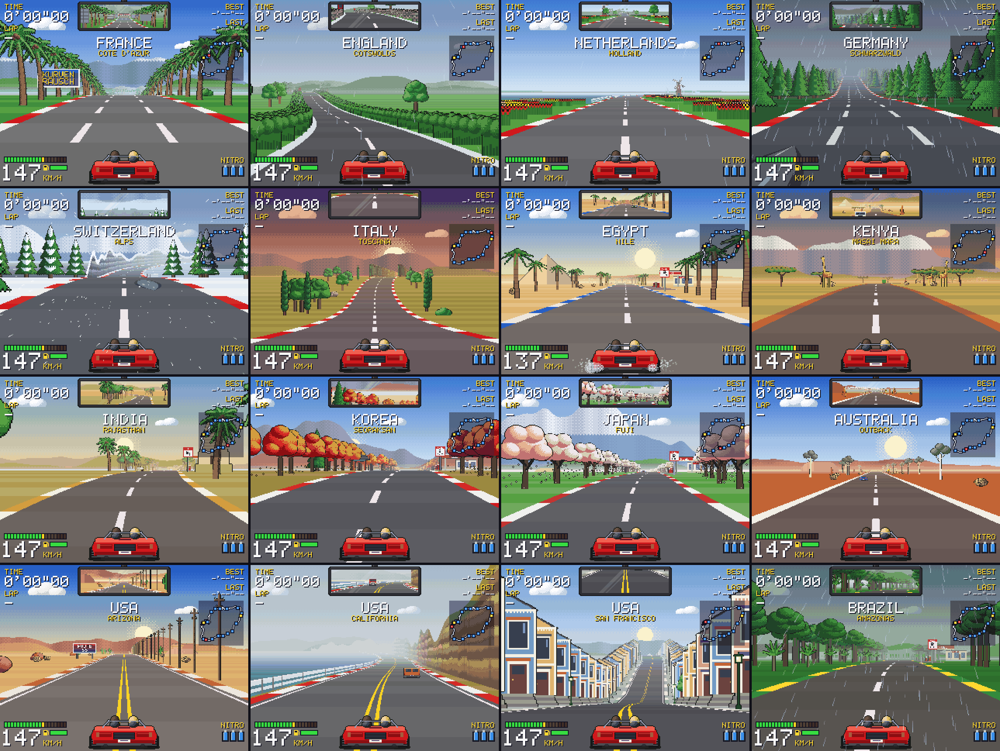

Classic pseudo-3D bitmap racer

Software-rendered 320×240 framebuffer, scaled up with chunky pixels. Built to WebAssembly with Emscripten and packaged with Nix.
Play Kurvenrausch (WASM)In the spirit of OutRun, Lotus Esprit Turbo Challenge and Pole Position: one lap through Europe and the USA with weather, cliff roads, traffic, and a synthesised engine. Written in C++17 with SDL2. All art is generated procedurally as pixel art at startup; all sound is synthesised on the fly — there are no asset files.
France, England, the Netherlands, Germany, Switzerland, Italy, Egypt, Kenya, India, Korea, Japan, Australia, Arizona, California, San Francisco, Brazil — each with its own scenery, weather and road markings.
